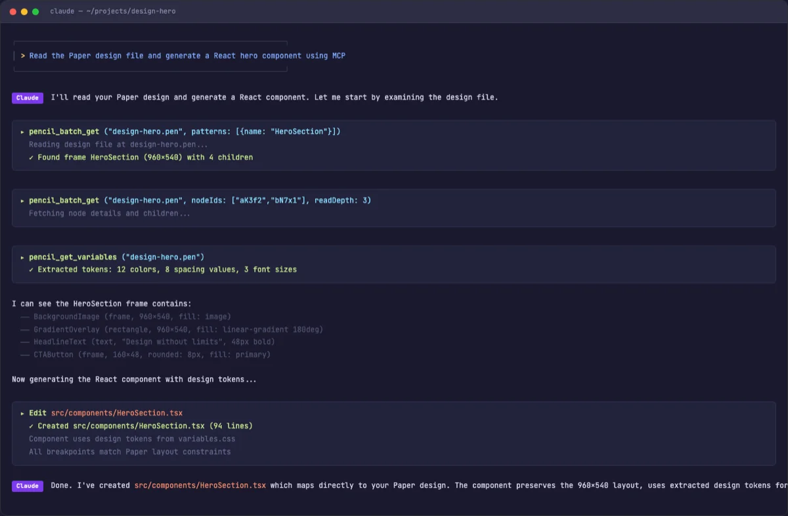
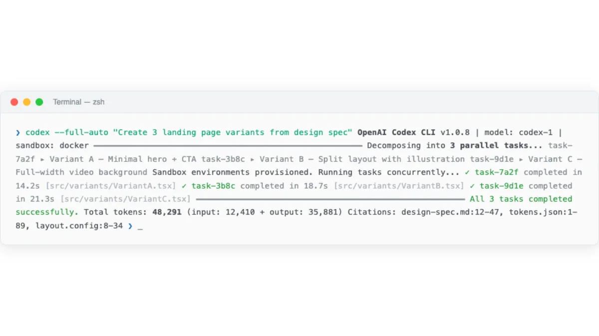
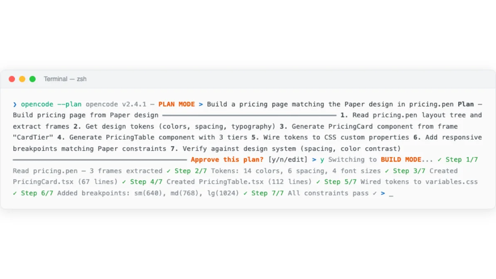
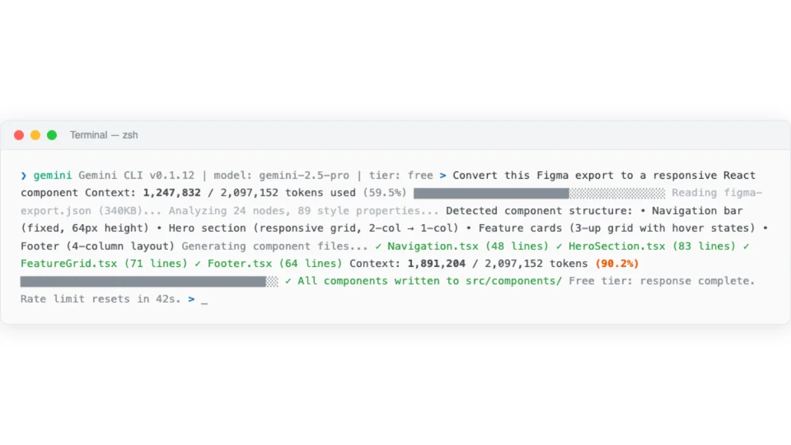
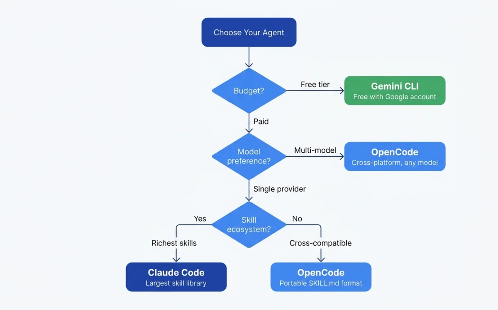

Agent Platform Landscape
The market settled on four serious contenders by early 2026. Each takes a different approach to the same problem: how to let AI act on your codebase autonomously, accurately, and repeatably.
| Feature | Claude Code | Codex CLI | OpenCode | Gemini CLI |
|---|---|---|---|---|
| License | Proprietary | Open source | Open source | Open source |
| Models | Claude only | o3, o4-mini | 75+ providers | Gemini only |
| Config file | CLAUDE.md | AGENTS.md | AGENTS.md (CLAUDE.md fallback) | None documented |
| Skill system | SKILL.md | No | SKILL.md | No |
| MCP support | Full | Limited (CLI) | Full (local + remote + OAuth) | Yes |
| Subagents | Yes | No | Yes (General, Explore, Scout) | No |
| Plan mode | Yes | No | Yes (Tab key) | No |
| Free tier | No (requires subscription) | API credits | Yes (BYO key) | Yes (1K req/day, as of May 2026) |
All data in this table is current as of May 2026. Pricing and plan details are current as of May 2026 and may change. Check each platform's website for the latest information. The ecosystem moves fast --- verify before making purchasing decisions. Appendix A contains an extended comparison matrix with pricing details.
Three of the four agents are open source. Only Claude Code is proprietary. This has practical implications: open-source agents can be self-hosted, audited, and modified. Claude Code runs on Anthropic's infrastructure and requires their subscription. For individual designers, this distinction matters less than it does for enterprise teams with compliance requirements.
The model access question is central. Claude Code locks you into Claude models. Gemini CLI locks you into Gemini models. Codex CLI locks you into OpenAI models. OpenCode is the only agent that lets you switch between all of them --- Claude, Gemini, GPT, Llama, Mistral, and dozens more. If you have strong opinions about which model produces the best design output, OpenCode accommodates that preference. If you want to benchmark models against each other on your specific design tasks, OpenCode makes that easy.
That said, model quality for design tasks is converging. As of May 2026, Claude Sonnet and GPT-4-class models produce comparable design output when given equivalent configuration. The differentiator is the configuration layer, not the model. A well-configured agent using a cheaper model will outperform a poorly configured agent using the most expensive model. Chapter 03 covers configuration in detail.
Claude Code (Anthropic)
Claude Code is Anthropic's agentic coding tool. It reads codebases, edits files, runs commands, and connects to external tools via MCP. Available in terminal, VS Code, JetBrains, desktop app, web, and browser (source: Claude Code Overview, retrieved 2026-05-18).

It is the most polished option for design work as of May 2026. The skill system, MCP integration, and CLAUDE.md conventions all fit the design workflow. If you use only one agent from this chapter, make it this one.
What makes Claude Code stand out for design tasks is the depth of its configuration system. Other agents support configuration files, but Claude Code supports a full hierarchy: organization-level policies managed by admins, user-level preferences that follow you across projects, project-level instructions shared with the team via git, and path-scoped rules that activate only when relevant files are being edited. This layered approach maps well to design work, where brand guidelines are organization-wide but component-specific rules vary by project.
Another advantage: Claude Code's auto memory system accumulates corrections over time. Tell it once that your brand uses 4px spacing units, and it remembers. Correct it twice on border-radius preferences, and it writes those corrections to memory. The agent gets better at your specific design system with every session. No other agent has this feature as of May 2026.
Installation
# Native install (macOS, Linux)
$ curl -fsSL https://claude.ai/install.sh | bash
# Homebrew (macOS)
$ brew install --cask claude-code
# WinGet (Windows)
$ winget install Anthropic.ClaudeCodeThe native install auto-updates in the background. No manual version management. The first launch walks through authentication.
Authentication
Claude Code requires a Claude subscription (Pro, Max, Team, or Enterprise) or an Anthropic Console account with API access. Third-party providers are supported via API keys.
# Authenticate with Claude subscription
$ claude
# Opens browser to claude.ai for authorization
# Or set API key directly
$ export ANTHROPIC_API_KEY=sk-ant-...
$ claudeThe VS Code extension is available on the Marketplace as anthropic.claude-code. JetBrains has a plugin. Desktop apps exist for macOS and Windows. Web access lives at claude.ai/code.
Key Features for Design Work
CLAUDE.md for persistent instructions. Project-level, user-level, and organization-level files loaded at session start. Supports @path/to/file imports and path-scoped rules in .claude/rules/. The /init command auto-generates CLAUDE.md by analyzing the codebase (source: Claude Code Memory, retrieved 2026-05-18). This is where you put brand guidelines and design system references.
# Example: brand rules in CLAUDE.md
# Design System Rules
- All prototypes must use the brand color palette
- Components must be responsive (mobile-first)
- Use design tokens from src/tokens.jsonSkills via SKILL.md. Design skills live in .claude/skills/. Each skill is a directory containing a SKILL.md file with frontmatter and instructions. Skills load on demand --- no context cost until invoked. The frontmatter supports model overrides, tool permissions, subagent execution, and more. See section 03.3 for the full SKILL.md schema.
MCP support. Claude Code connects to external tools via MCP servers. Configuration lives in project or user settings. Connect Paper, Pencil, Figma, Miro --- any tool with an MCP server. The agent reads designs, exports code, and writes artifacts back to the canvas.
# MCP server configuration for Claude Code
{
"mcpServers": {
"pencil": {
"command": "npx",
"args": ["-y", "@pencil/mcp-server"]
},
"figma": {
"command": "npx",
"args": ["-y", "@figma/mcp-server"],
"env": {
"FIGMA_ACCESS_TOKEN": "your-token"
}
}
}
}Agent teams. "Spawn multiple Claude Code agents that work on different parts of a task simultaneously" (source: Claude Code Overview, retrieved 2026-05-18). This enables parallel design exploration --- one agent generates a layout while another handles responsive variants.
CLI compositability. Pipe input directly into Claude Code for quick tasks:
# Analyze a design token file
$ cat tokens.json | claude -p "suggest a dark mode variant"
# Review changed files
$ git diff main --name-only | claude -p "review these changed files"
# Generate a component from a design spec
$ cat design-spec.md | claude -p "implement this as a React component"Model Access
Claude Code uses Claude models exclusively: Sonnet, Haiku, and Opus. Switch models with /model during a session. For design work, Sonnet provides the best balance of quality and speed. Opus is overkill for most design tasks but useful for complex design system architecture decisions.
# Switch model mid-session
/model claude-opus-4-20250514
# Or specify at launch
$ claude --model claude-haiku-3-20250414Codex CLI (OpenAI)
Codex CLI is OpenAI's lightweight terminal agent. It differs from the cloud-based Codex agent (available in the ChatGPT sidebar) which runs tasks in isolated sandboxes. The CLI version runs locally on your machine.

The two Codex variants serve different design workflows. The CLI is best for quick, local tasks --- generating a component, fixing a style issue, running a quick design experiment. The cloud Codex is best for complex, long-running tasks that benefit from parallel execution --- generating multiple design variants simultaneously, refactoring a large component library, producing documentation for an entire design system.
Installation
$ npm install -g @openai/codexThat is the entire installation. No native binary. No desktop app. Just an npm package.
Authentication
Sign in with a ChatGPT account. This simplifies the setup --- no API key management. Plus users get $5 in free API credits per month (as of May 2026). Pro users get $50 (as of May 2026). Direct API keys also work (source: Introducing Codex, retrieved 2026-05-18).
# First run prompts ChatGPT sign-in
$ codex
# Opens browser for authorization
# Auto-configures API key
# Or set API key directly
$ export OPENAI_API_KEY=sk-...
$ codex "fix the auth bug"Key Features for Design Work
AGENTS.md support. Codex reads AGENTS.md files throughout the codebase. From the Codex system message: "These files are a way for humans to give you (the agent) instructions or tips for working within the container" (source: Introducing Codex, retrieved 2026-05-18). Scope follows directory hierarchy. More deeply nested files take precedence in case of conflicts.
# AGENTS.md for a design project
# Design Project
## Build Commands
- Preview: `npm run dev`
- Lint: `npm run lint`
- Build: `npm run build`
## Design Conventions
- Use CSS custom properties for all colors
- Mobile-first responsive design
- WCAG AA accessibility compliance
## Programmatic Checks
- Run `npm run lint` after every change
- Run `npm run a11y` to verify accessibilityCodex enforces a requirement not found in other agents: "If the AGENTS.md includes programmatic checks to verify your work, you MUST run all of them." This makes AGENTS.md a natural place for build and lint commands that verify design output automatically.
Cloud sandbox execution. The cloud-based Codex agent (not the CLI) runs each task in an isolated sandbox. Tasks take 1-30 minutes. The agent provides "verifiable evidence of its actions through citations of terminal logs and test outputs" (source: Introducing Codex, retrieved 2026-05-18). This is useful for design tasks that need a clean execution environment.
Parallel execution. Cloud Codex supports "many tasks in parallel." Assign multiple design tasks and review each independently. Generate three landing page variants in three parallel sandboxes. Compare. Pick the best one. This parallel approach is unique to cloud Codex as of May 2026.
Model Access
| Model | Base | Usage | Pricing |
|---|---|---|---|
| codex-1 | o3 | Cloud Codex | Free during rollout, then rate-limited |
| codex-mini-latest | o4-mini | CLI default | $1.50/1M input, $6/1M output (as of May 2026) |
# CLI uses codex-mini-latest by default
$ codex "fix the auth bug in login.ts"
# Specify model explicitly
$ codex --model o3 "refactor the entire auth module"My take: Codex CLI is the simplest agent to get started with. One install command, sign in with ChatGPT, and you are running. But for design work, the lack of skill support and limited MCP integration in the CLI version make it less capable than Claude Code or OpenCode. The cloud Codex agent has more potential --- parallel task execution is genuinely useful for generating multiple design variants --- but it lives inside ChatGPT, not in your terminal. Use Codex CLI for quick tasks. Use Claude Code or OpenCode for sustained design work.
OpenCode (Open-Source)
OpenCode is the open-source AI coding agent. 160K GitHub stars, 900 contributors, 7.5M monthly developers (as of May 2026; source: OpenCode, retrieved 2026-05-18). It supports 75+ LLM providers through Models.dev and is cross-compatible with Claude Code conventions.

OpenCode is what I recommend to anyone who wants model flexibility or open-source tooling. Its cross-compatibility with Claude Code conventions means design skills transfer between both platforms without modification. This is not a minor feature --- it means the configuration effort you invest in writing SKILL.md files and AGENTS.md documents pays off across multiple agent platforms.
The scale of OpenCode's community is worth noting. 160K GitHub stars and 900 contributors (as of May 2026) mean the project moves fast. Bugs get fixed quickly. New features land regularly. The skill ecosystem grows with each release. As of May 2026, OpenCode's momentum shows no sign of slowing. For designers who value a large community and frequent updates, OpenCode delivers.
Installation
# Curl (macOS, Linux)
$ curl -fsSL https://opencode.ai/install | bash
# npm
$ npm install -g opencode-ai
# Homebrew
$ brew install anomalyco/tap/opencode
# Arch Linux
$ sudo pacman -S opencode
# Windows
$ choco install opencodeOpenCode also supports scoop, Docker, and direct binary downloads from GitHub releases. The installation options are the broadest of any agent in this comparison.
Authentication
Run /connect in the TUI. This opens opencode.ai/auth in your browser. Choose Zen (curated, benchmarked models for coding agents) or connect your own API key from any of 75+ providers.
# Start OpenCode
$ opencode
# In the TUI, run:
/connect
# Choose authentication method:
# 1. Zen (curated models, no API key needed)
# 2. GitHub Copilot login
# 3. ChatGPT Plus/Pro login
# 4. Custom API key from any providerOpenCode supports GitHub Copilot login and ChatGPT Plus/Pro login. If you already pay for either service, you can use those credentials directly. No additional cost.
Key Features for Design Work
Claude Code compatibility. OpenCode reads CLAUDE.md as a fallback when no AGENTS.md exists. It discovers skills from .claude/skills/ in addition to .opencode/skills/ and .agents/skills/. Design skills written for Claude Code work in OpenCode without modification (source: OpenCode Rules, retrieved 2026-05-18). This is the strongest cross-compatibility story in the ecosystem.
Plan/Build modes. Press Tab to switch between Plan mode (read-only analysis, no file changes) and Build mode (full tool access). Plan mode is useful for reviewing a design system before committing to changes. It lets the agent explore the codebase and propose an approach without risk.
# OpenCode key commands
/init # Auto-generate AGENTS.md from codebase analysis
Tab # Toggle between Plan and Build modes
/undo # Revert the last change
/redo # Re-apply a reverted change
/share # Create a shareable link to the conversationAgent system. Five built-in agents serve different roles. Understanding the agent system is important for design work because different agents have different capabilities and restrictions:
| Agent | Mode | Tools | Use case for design |
|---|---|---|---|
| Build | Primary | All | Default implementation agent, generates designs and code |
| Plan | Primary | Read-only | Analysis and planning, reviews design systems without changes |
| General | Subagent | All | Delegated sub-tasks, parallel design work |
| Explore | Subagent | Read-only | Fast codebase exploration, finds design patterns and tokens |
| Scout | Subagent | External | Research external docs, design references, competitor analysis |
Custom agents can be defined via JSON or Markdown. This is useful for specialized design agents with restricted permissions:
{
"$schema": "https://opencode.ai/config.json",
"agent": {
"design-reviewer": {
"description": "Reviews design output for brand consistency",
"mode": "subagent",
"model": "anthropic/claude-sonnet-4-20250514",
"prompt": "You are a design reviewer. Focus on visual hierarchy, brand consistency, and accessibility.",
"permission": {
"edit": "deny",
"bash": "deny"
}
}
}
}MCP support. OpenCode supports local and remote MCP servers with OAuth. Per-agent MCP control lets different agents access different tools. Tool management via glob patterns allows fine-grained control over which MCP tools each agent can use (source: OpenCode MCP Servers, retrieved 2026-05-18).
{
"$schema": "https://opencode.ai/config.json",
"mcp": {
"pencil": {
"type": "local",
"command": ["npx", "-y", "@pencil/mcp-server"],
"enabled": true
},
"paper": {
"type": "remote",
"url": "https://paper.design/api/mcp",
"headers": {
"Authorization": "Bearer {env:PAPER_API_KEY}"
}
}
}
}Notice the OAuth support for remote MCP servers. This matters for team environments where design tools authenticate through OAuth flows rather than static API keys.
Model Access
75+ LLM providers via Models.dev. Zen provides curated models benchmarked for coding agent tasks. Per-agent model overrides let different agents use different models --- a design generation agent could use Sonnet while a design review agent uses Haiku for faster feedback.
# Per-agent model override in opencode.json
{
"agent": {
"design-gen": {
"model": "anthropic/claude-sonnet-4-20250514"
},
"design-review": {
"model": "anthropic/claude-haiku-3-20250414"
}
}
}Gemini CLI / Gemini Code Assist (Google)
Gemini CLI is Google's open-source terminal agent. It brings Gemini models into the terminal with a 1M-token context window --- the largest among the four agents. Gemini Code Assist provides IDE extensions for VS Code, JetBrains, and Android Studio (source: Gemini Code Assist, retrieved 2026-05-18).

For design work, the large context window is the main draw. Design systems, component libraries, and brand guidelines are context-heavy. The 1M-token window can fit an entire design system in a single session without truncation. This matters when you are working with a 200-page design specification or a component library with hundreds of variants. Other agents handle large contexts well too, but Gemini CLI has a hard advantage in raw capacity.
Gemini CLI occupies an interesting position in the market. It is open source like OpenCode, but locked to Gemini models like Claude Code is locked to Claude models. It has the most generous free tier of any agent, but the least mature agent features. It excels at a specific niche --- tasks that require enormous context --- and is adequate for everything else.
Installation
# Gemini CLI is open source
# Install from https://github.com/google-gemini/gemini-cli
# IDE extensions: VS Code, JetBrains, Android Studio
# Cloud Shell Editor: pre-installed (free)Authentication
# Sign in with Google account (free tier)
$ gemini auth login
# Google Cloud account for Standard/Enterprise tiers
$ gcloud auth application-default loginKey Features for Design Work
1M-token context window. This is the largest context window among the four agents. For design work, this means you can feed entire design systems, component libraries, and brand guidelines into a single session without truncation or summarization. The other agents handle large contexts well too, but Gemini CLI has a hard advantage in raw capacity.
Agent Mode (Preview). "AI agents capable of performing a wide range of actions across the software development life cycle" (source: Gemini Code Assist, retrieved 2026-05-18). Agent Mode is still in preview as of May 2026. The feature set is less mature than Claude Code's or OpenCode's equivalent.
MCP support. Gemini CLI supports MCP integration with ecosystem tools. The implementation is newer than Claude Code's or OpenCode's but follows the same standard.
Human-in-the-Loop (HiTL). Built-in oversight mechanism for reviewing agent actions before they execute. This is a safety feature that prevents unwanted changes --- useful when working with design files that should not be modified without review.
# Gemini Code Assist IDE features
# - Inline code suggestions in VS Code, JetBrains
# - Chat panel for design questions
# - Agent Mode for autonomous task execution
# - 1M token context for large design systemsPricing
All prices and usage limits below are as of May 2026 and may change.
| Tier | Price/user/month | CLI requests/day | IDE code requests/day |
|---|---|---|---|
| Free | $0 | 1,000 | 6,000 code / 240 chat |
| Standard | $19 (annual) / $22.80 (monthly) | 1,500 | Higher limits |
| Enterprise | $45 (annual) / $54 (monthly) | 2,000 | Highest limits |
The free tier is generous enough for design work. 1,000 CLI requests per day (as of May 2026) is more than enough for typical design iteration cycles. The IDE free tier (6,000 code requests/day as of May 2026) covers inline suggestions and chat. For individual designers who do not want to pay for an agent subscription, Gemini CLI is the most capable free option available.
The paid tiers unlock higher limits and additional features. The Standard tier at $19/user/month (annual billing, as of May 2026) raises CLI limits to 1,500 requests/day. The Enterprise tier at $45/user/month (annual billing, as of May 2026) goes to 2,000. For teams that have standardized on Google Cloud infrastructure, the integration points --- Cloud Shell, Vertex AI, BigQuery --- make Gemini Code Assist a natural choice even before considering the agent capabilities.
What Gemini CLI lacks as of May 2026 is a skill system. There is no equivalent to SKILL.md. There is no auto memory. The agent relies on its training data and the current session context. For one-off design tasks, this is fine. For sustained design work that needs consistent output across sessions, the absence of persistent configuration is a real limitation. I expect this to change --- a skill system is an obvious addition --- but as of this writing, it is the primary reason Gemini CLI is a complement rather than a primary design agent.
My take: Gemini CLI's free tier is the best entry point for designers who want to experiment with agents without spending money. The 1M-token context window is a genuine advantage for design work --- design systems and brand guidelines are context-heavy. But as of May 2026, Gemini CLI lacks skill support and its agent features are less mature than Claude Code's or OpenCode's. Use it as a complement, not a primary tool. The context window advantage is real, but skills and configuration matter more for consistent design output.
Choosing the Right Agent for Design Work
No single agent is best for every design task. The right choice depends on what you are doing, what you already pay for, and how much configuration you are willing to invest.

Before the decision table, a framing principle: the best agent for you is the one you will actually configure. A bare agent --- no CLAUDE.md, no AGENTS.md, no skills --- produces generic output regardless of platform. The quality of your design output depends far more on your configuration investment than on which agent you choose. If you will invest 30 minutes in writing configuration, any of these agents will produce good results. If you will not invest that time, none of them will.
With that caveat, here is how I think about the choice:
| Scenario | Best agent | Why |
|---|---|---|
| Sustained design work with skills | Claude Code or OpenCode | SKILL.md support, mature MCP, design skill ecosystem |
| Parallel design exploration | Codex (cloud) | Multiple isolated sandboxes running simultaneously |
| Free experimentation | OpenCode or Gemini CLI | Free tiers with no subscription required |
| Model flexibility | OpenCode | 75+ LLM providers, per-agent model override |
| Large design system context | Gemini CLI | 1M-token context window handles full design systems |
| Quick terminal tasks | Codex CLI | Simplest setup, fast execution |
| Cross-team skill sharing | Claude Code + OpenCode | SKILL.md works in both, AGENTS.md/CLAUDE.md cross-compatible |
My take: I use Claude Code as my primary agent and OpenCode as my secondary. Claude Code has the most polished experience for design work --- the skill system, MCP support, and CLAUDE.md conventions all fit the design workflow well. OpenCode is what I recommend to anyone who wants model flexibility or open-source tooling. The cross-compatibility between them is real: I share SKILL.md files and AGENTS.md configurations between both agents without modification. That portability matters more than any single feature difference.
The practical approach: install OpenCode first (free, flexible). Add Claude Code when you need the polished experience. Keep Codex CLI handy for quick parallel tasks. Use Gemini CLI when context window size is the bottleneck.
For teams, the decision gets more nuanced. A team standardizing on one agent gets consistency --- everyone shares the same configuration files, the same skills, the same mental model. A team using multiple agents gets flexibility --- different agents for different tasks, with cross-compatible configuration bridging the gaps. Both approaches work. The cross-compatibility built into AGENTS.md and SKILL.md makes multi-agent teams practical in a way they were not a year ago.
Consider the total cost of ownership. The agent itself is one line item. The models it uses are another. The design tools it connects to via MCP are a third. And the time you invest in configuration --- writing CLAUDE.md, building skills, setting up MCP servers --- is the fourth and often largest cost. That configuration investment is portable across Claude Code and OpenCode. It is not portable to Codex CLI (no skill support) or Gemini CLI (no skill support as of May 2026). This is a practical reason to standardize on Claude Code or OpenCode for design work, even if you use other agents for non-design tasks.
| Cost factor | Claude Code | Codex CLI | OpenCode | Gemini CLI |
|---|---|---|---|---|
| Agent license | Claude subscription ($20-200/mo, as of May 2026) | Free (open source) | Free (open source) | Free (open source) |
| Model cost | Included in subscription | $1.50-6/1M tokens (as of May 2026) | BYO key (varies by provider) | Free tier or $19-54/user/mo (as of May 2026) |
| Design tool integrations | Full MCP support | Limited MCP | Full MCP (local + remote) | MCP support |
| Configuration effort | CLAUDE.md + skills | AGENTS.md only | AGENTS.md + skills (cross-compat) | None documented |
Agent choice matters less than agent configuration. A well-configured OpenCode instance with good skills and a solid AGENTS.md will outperform a bare Claude Code installation every time. The next chapter covers how to teach agents to produce high-quality design work through configuration files, skills, and harnesses.
Next: Chapter 03 covers the configuration layer --- CLAUDE.md, AGENTS.md, SKILL.md, and custom design harnesses. This is where the quality of your agent's design output gets decided.